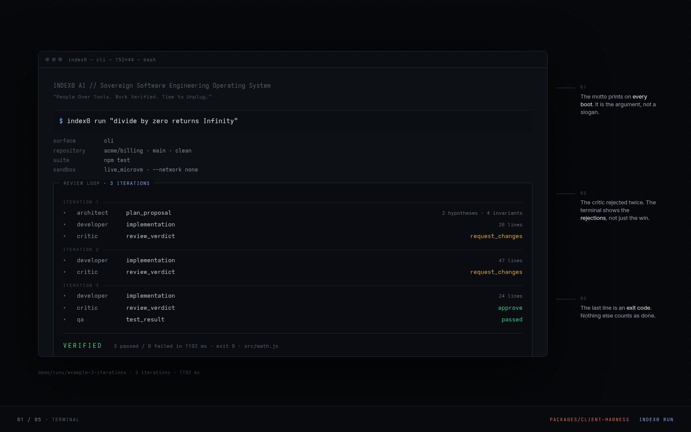
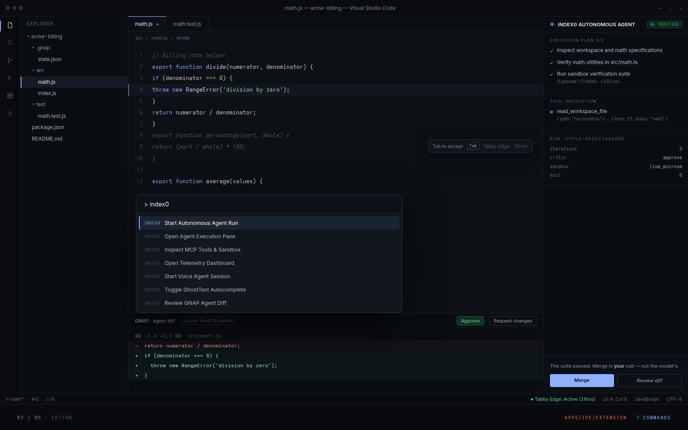
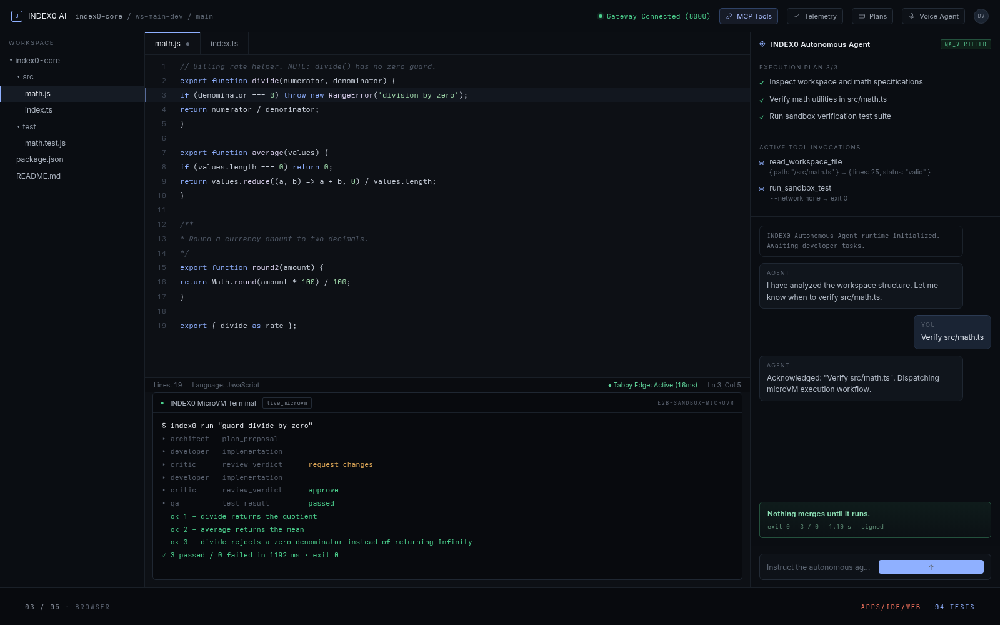
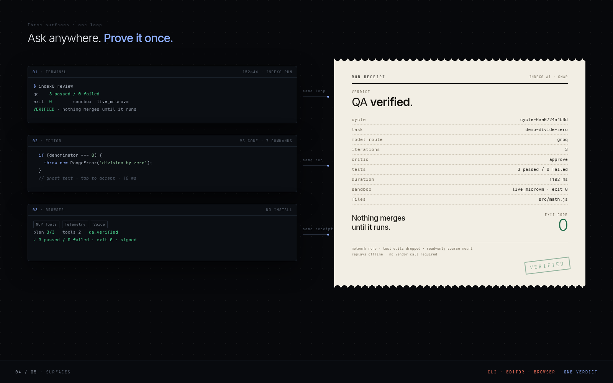
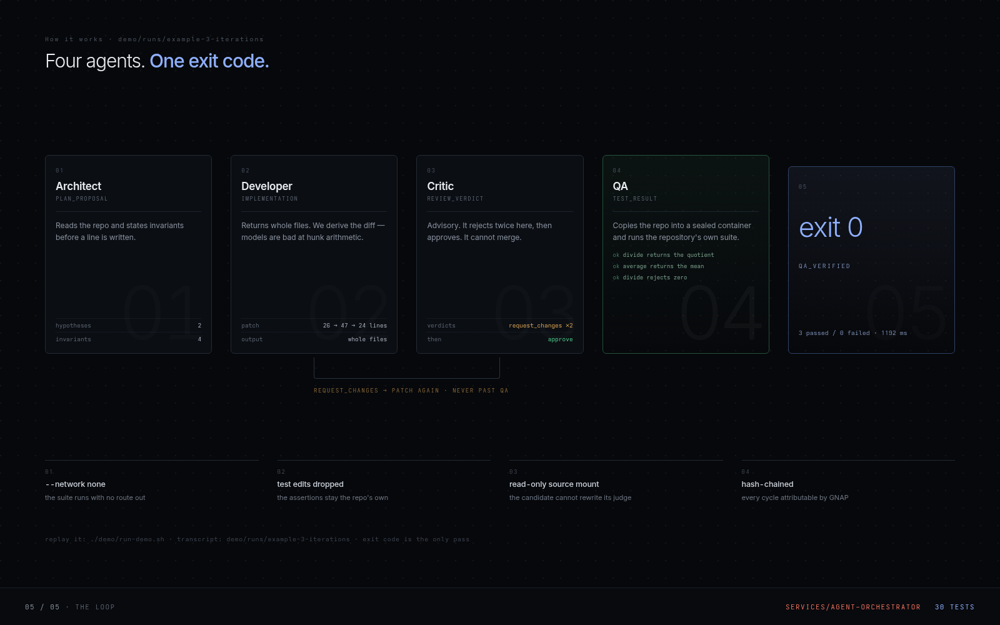

Design mockups of the CLI, the editor extension and the browser
workbench. Every string is drawn from source in this repository — none of
these are screen captures. Full rules and provenance: shots/README.md.




